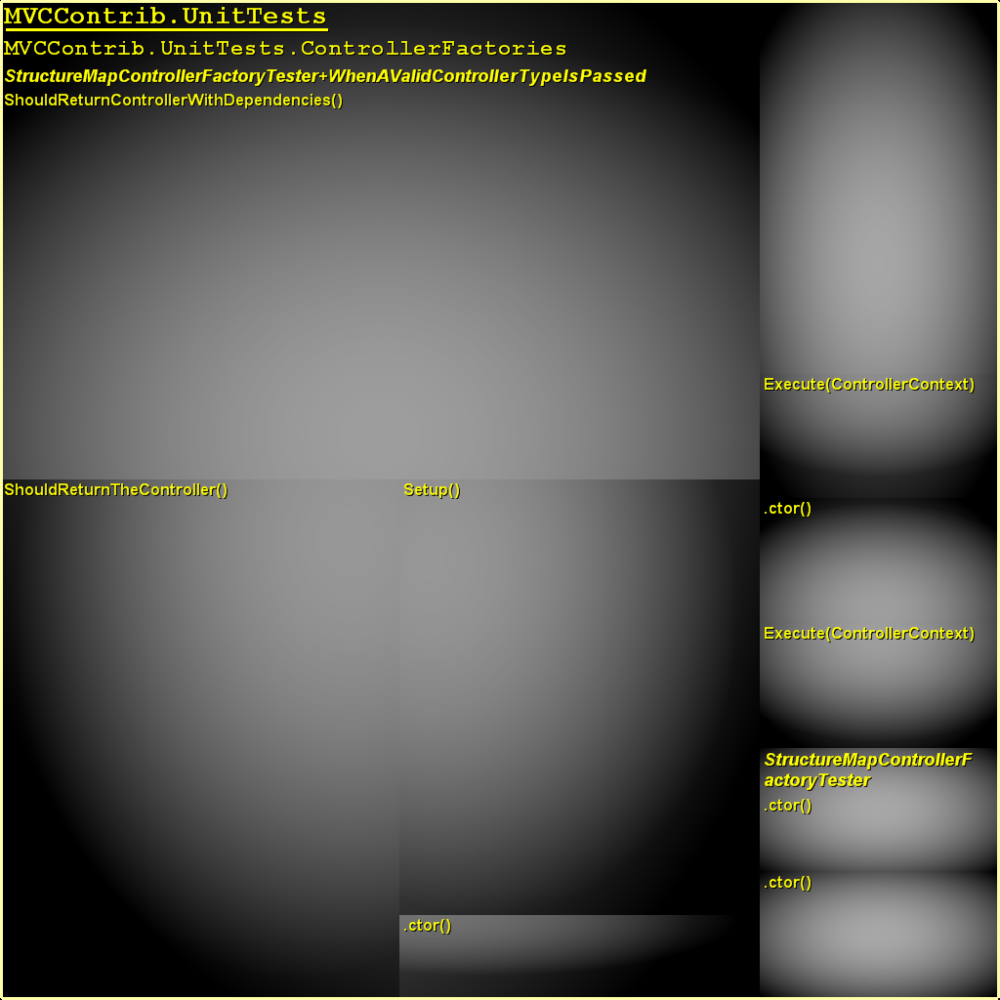
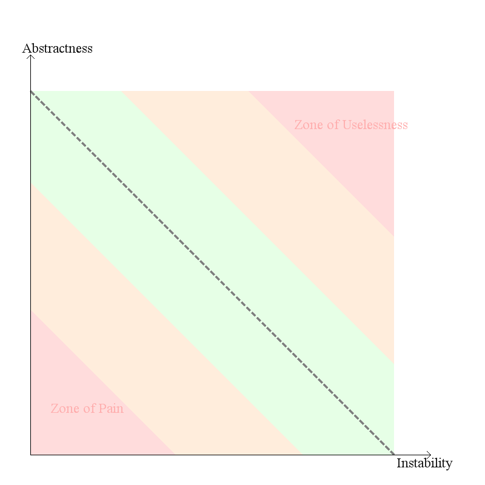

NDepend Report
Application name: MvcContrib
This report has been built on: 12/15/2007 00:47:10
in 00:10
by NDepend v2.6.1.1619 (Trial /Open Src / Academic Edition)
Application Metrics
Assemblies Metrics
VisualNDepend View
Assemblies Abstractness vs. Instability
Assemblies Dependencies
Assemblies Dependencies Diagram
Assemblies build order
NDepend information and warnings
CQL Queries and Constraints
Types Metrics
Application Metrics
Number of IL instructions: 0
Number of lines of code: 0
Number of lines of comment: 0
Percentage comment: 0
Number of assemblies: 0
Number of classes: 0
Number of types: 0
Number of abstract classes: 0
Number of interfaces: 0
Number of value types: 0
Number of exception classes: 0
Number of attribute classes: 0
Number of delegate classes: 0
Number of enumerations classes: 0
Number of generic type definitions: 0
Number of generic method definitions: 0
Percentage of public types: 0%
Percentage of public methods: 0%
Percentage of classes with at least one public field: 0%
| Stat | # Occurrences | Avg | StdDev | Max |
|
Properties on Interfaces
| 0 Interfaces
| 0 | 0 | -1 properties on |
|
Methods on Interfaces
| 0 Interfaces
| 0 | 0 | -1 methods on |
|
Arguments on Methods on Interfaces
| 0 Methods
| 0 | 0 | -1 arguments on |
|
Public Properties on Classes
| 0 Classes
| 0 | 0 | -1 public properties on |
|
Public Methods on Classes
| 0 Classes
| 0 | 0 | -1 public methods on |
|
Arguments on Public Methods on Classes
| 0 Methods
| 0 | 0 | -1 arguments on |
|
IL Instructions in non-abstract Methods
| 0 Methods
| 0 | 0 | -1 IL instructions in |
|
|
|
Cyclomatic complexity on non abstract Methods
| 0 Methods
| 0 | 0 |
CC = -1 for |
Assemblies Metrics
VisualNDepend View
Assemblies Abstractness vs. Instability
Assemblies Dependencies
| Assembly | Depends on... | Is referenced by... |
Assemblies Dependencies Diagram
Blue : Assemblies of your application.
Yellow : Framework assemblies referenced by assemblies of your application.
Assemblies build order
NDepend information and warnings
12/15/2007 00:46:59 Begin analysis with NDepend v2.6.1.1619
12/15/2007 00:47:00 Retrieve dependencies of your application.
0 CQL constraint has been extracted from code.
12/15/2007 00:47:01 Analyse dependencies of your application.
No dependency cycle detected in assemblies referencement graph.
12/15/2007 00:47:10 End NDepend analyse.
12/15/2007 00:47:10 Duration: 00:00:10
12/15/2007 00:47:10 Building the report (standard).
CQL Queries and Constraints
Types Metrics
rank: TypeRank (based on Google PageRank algo)
lcom/lcom HS: Lack of Cohesion Of Methods of a class (HS means Henderson-Sellers formula)
CC: Cyclomatic Complexity computed on source code
ILCC: Cyclomatic Complexity computed on IL code
Ca: Afferent Coupling
Ce: Efferent Coupling
ABC: Association Between Classes
NOC: Number Of Children
DIT: Depth in Inheritance Tree
A pink cell means that its value belongs to the 15% highest values for its metric